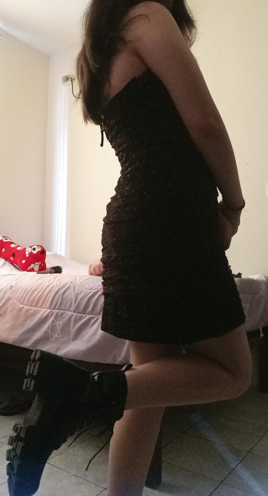

30 de enero del 2025
Mi Daniela hermosa
Desde ese dia que te conoci supe que te amaria por toda mi vida y mira ahora somos novios,somos una pareja feliz que ahora comparte muchas cosas
en verdad mi niña te amo y mucho, no dudes nunca de mi amor tu ya sabes que yo soy tuyo jsjs te amo mi bebe te amoooo.
Cuando veo las fotos que me envias de tu lindo rotro me lo quedo mirando mucho tiempo admirando tu belleza, ademas cuando me enviaste la fot tuya en vestido
dije "en seri esta es mi niña, la reina de mi vida, la princesa de mi corazon y con ella en un futuro me casare. Me enamore mucho de ti y ahora no te puedo
soltar pues una vida sin ti no es vida.

ERES UNA DIOSA MI BEBE, MI GUAGUA, MI PRINCESA.
Dejame decirte mi amor que tu eres tan:
- Linda
- Bella
- Hermosa
- Preciosa
- Guapa
- Increible
- Fantastica
- Deslumbrante
- Radiante
- Divina
- Encantadora
- Fascinante
- Maravillosa
- Espectacular
- Resplandeciente
- Adorable
- Fabulosa
- Dulce
- Tierna
- Celestial
- Sublime
- Irresistible
- Hechizante
- Mágica
- Única
- Inigualable
- Impresionante
- Perfecta
- Sensacional
Y Lo que me faltaba es un poema para usted mi reina bella, mi daniela preciosa
ir a la musica
o a esta musica ir a la musica 2
Me dijiste que solo te haga las 50 veces del porq que te amo pero yo decidi hacer 100 porq te amo mi bebe